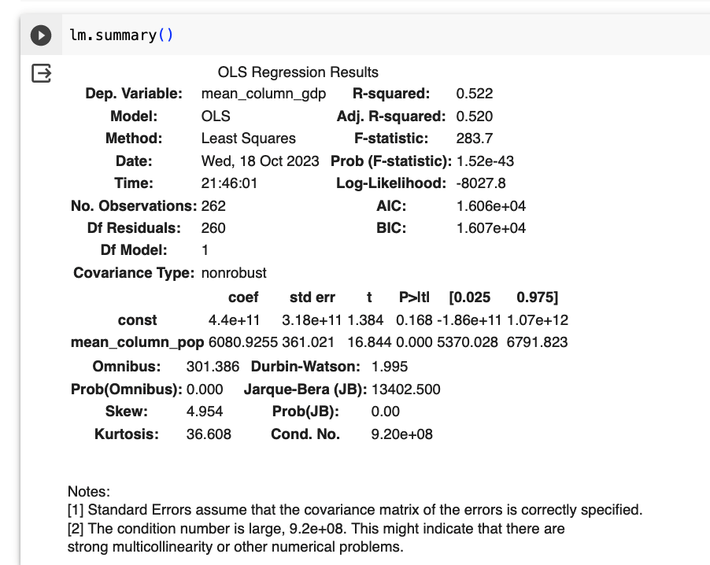
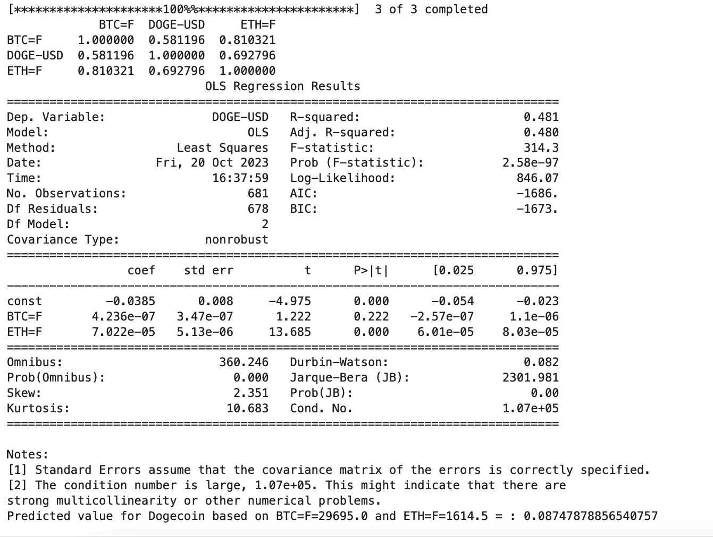
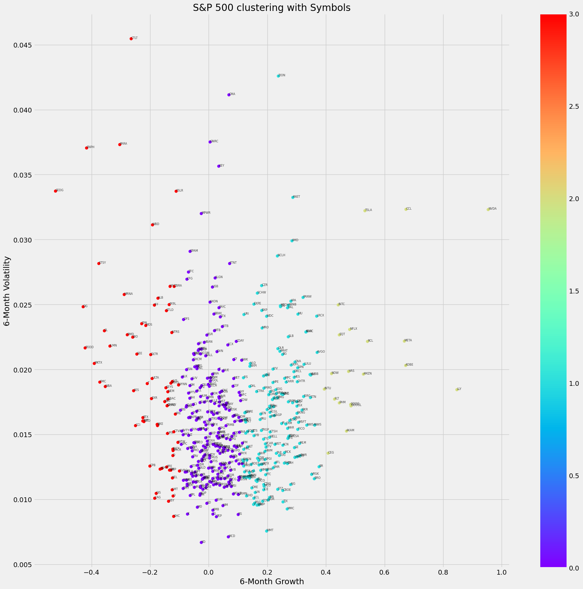
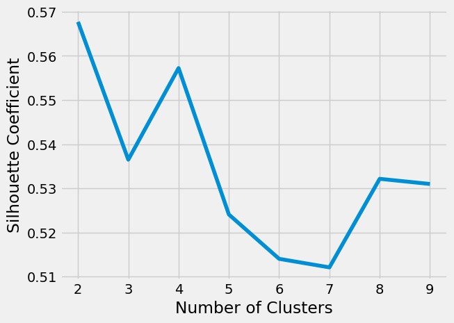
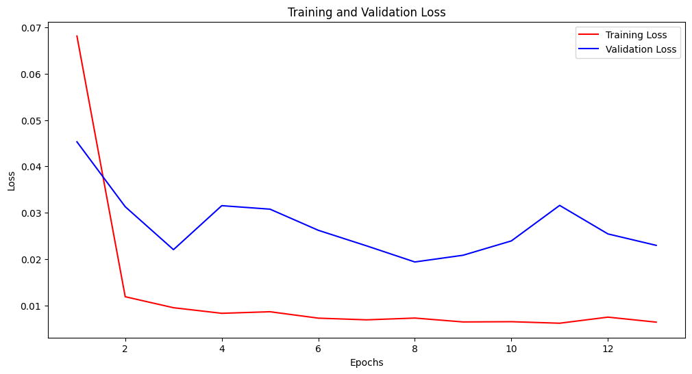

Discussion Forum
Collaborative Discussion 1: The 4th Industrial Revolution
Initial Post:
The Industry 4.0 revolution has heralded a transformative era in trading, characterised by the integration of advanced technologies such as Artificial Intelligence (AI), the Internet of Things (IoT), Blockchain, and Big Data analytics. The impact on trading manifests in the emergence of algorithmic and high-frequency trading, enabling efficiency and speed. In addition, enhanced decision-making through Big Data analytics has led to more precise trend identification and predictive modelling (Cavalcante et al. l, 2016). Blockchain has ensured secure and transparent transactions, while IoT has facilitated globalised trading operations. Furthermore, the use of AI in customer service and regulatory compliance has revolutionised personalised customer experiences and legal adherence.
Notwithstanding, these advancements have also introduced challenges. For instance, while increasing efficiency, algorithmic and high-frequency trading present concerns over market fairness and system vulnerabilities. Increasingly, the extensive use of Big Data also leads to potential privacy violations, and the dependence on Blockchain might demand adherence to evolving and complex legal frameworks for which few countries are prepared. Industry 4.0, whilst offering unparalleled opportunities in globalised trading operations, may bring regulatory inconsistencies across jurisdictions and difficult challenges for local government (Yadav, 2015). Additionally, the application of AI in various domains within the industry may cause job displacement (Schwab and Zahidi, 2020) and ethical dilemmas related to machine bias and decision-making. Therefore, adopting these technological advancements requires a balanced approach, considering the tremendous opportunities and the multifaceted challenges, including cybersecurity risks, legal compliance, ethical considerations, and the potential socio-economic impacts on the workforce.
References
Cavalcante, R.C., Brasileiro, R.C., Souza, V.L.F., Nobrega, J.P. and Oliveira, A.L.I. (2016). Computational Intelligence and Financial Markets: A Survey and Future Directions. Expert Systems with Applications, 55, pp.194–211. doi:https://doi.org/10.1016/j.eswa.2016.02.006.
Schwab, K. and Zahidi, S. (2020). The Future of Jobs Report 2020 . [online] World Economic Forum. World Economic Forum. Available at: https://www3.weforum.org/docs/WEF_Future_of_Jobs_2020.pdf.
Yadav, Y. (2015). How algorithmic trading undermines efficiency in capital markets. Vand. L. Rev., 68, 1607.
Reply 1:
Thank you Dewyn for your insightful commentary on the fourth industrial revolution and Artificial Intelligence (AI) 's integral role in it. You have aptly highlighted the double-edged nature of AI. At the same time, it could revolutionise industries and enhance efficiency. Conversely, its misuse or inadequate preparation can lead to catastrophic outcomes, as demonstrated by the 2019 Boeing 737 Max incident you rightly highlighted.
It is worth noting that AI incidents are becoming more frequent, a trend that organisations like incidentdatabase.ai (AI Incident Database, 2023) are beginning to track more diligently. This phenomenon underscores the importance of vigilance in our AI deployments across industries.
Beyond the technical robustness of AI systems, factors like inter-departmental communication, training, and regulatory oversight are just as crucial. Your emphasis on proper design, rigorous testing, maintenance, and human oversight resonates deeply.
Furthermore, acquiring informed consent from users (in line with GDPR) is essential in ensuring their willingness or objection to sharing data enabling individuals to make informed decisions concerning their privacy. With this in mind, it is evident that the integration of privacy by design principles into the development and deployment of IoT-enabled data science solutions holds paramount importance for the safety of consumers, as argued by Atlam and Wills (2020). This approach ensures the prioritization of privacy considerations from the nascent stages of system design, embedding privacy protections within the technological structures of IoT.
Moreover, while the Boeing incident underscores the risks, it also serves as a potent lesson for industries worldwide on the importance of prudence, ethics, and caution when integrating AI. The hope is that such tragic lessons lead to a future where technology and humanity coexist harmoniously, maximising benefits while minimising risks.
References:
AI Incident Database (2023). Artificial Intelligence Incident Database. [online] incidentdatabase.ai. Available at: https://incidentdatabase.ai/apps/discover/?authors=Reuters&display=details&is_incident_report=true&page=1&sortBy=relevance [Accessed 17 Sep. 2023].
Reply 2:
Hi Simon,
Your post rightly asses that in the face of escalating environmental concerns, the concept of Industry 4.0 emerges as a powerful force in the battle against climate change. This revolutionary shift in industrial processes, characterised by the fusion of digital technologies, data-driven decisions, and advanced automation, holds immense potential to curb carbon emissions and foster sustainability across diverse sectors (Youssef, 2020).
At the core of Industry 4.0's impact are several vital aspects:
Resource Efficiency. As you rightly pointed out, industries can monitor energy consumption, optimise production processes, and reduce waste through sensors and IoT devices. Real-time data analysis leads to reduced energy usage and fewer greenhouse gas emissions. Predictive maintenance also extends equipment lifecycles, decreasing replacements and the associated carbon footprint.
Energy Management: Industry 4.0 advances energy management and smart grids, optimising the integration of renewable sources like solar panels and wind turbines. This process reduces reliance on fossil fuels and traditional energy sources, ultimately lowering emissions. Circular Economy: Industry 4.0 supports a circular economy by enabling closed-loop production systems. Enhanced traceability streamlines recycling and repurposing, while standardised components enhance customisation and scalability.
Collaboration and Regulation: Collaboration among policymakers, industries, and researchers is essential for responsible Industry 4.0 integration. Comprehensive frameworks and regulations ensure that its potential for climate-centric efforts is realised.
Notwithstanding, as we embrace Industry 4.0, we must also consider challenges and broader implications:
Cybersecurity and Data Privacy: Culot et al. (2019), in a recent paper, address how rapid digitisation and data sharing raise concerns about cybersecurity vulnerabilities and data privacy breaches, risking environmental, economic, and social disruptions.
Socio-economic Implications: Morrar et al. (2017) also highlighted that automation could lead to job displacement, necessitating a just transition strategy to address potential disparities.
In conclusion, as your post has rightly highlighted, Industry 4.0 offers a transformative path toward sustainability, where we can harness its potential to create a more sustainable and resilient future by addressing challenges, fostering collaboration, and enacting thoughtful regulation.
References:
Ben Youssef, A. (2020). How can Industry 4.0 contribute to combatting climate change?. Revue d'économie industrielle, (169), 161-193.
Culot, G., Fattori, F., Podrecca, M., & Sartor, M. (2019). Addressing industry 4.0 cybersecurity challenges. IEEE Engineering Management Review, 47(3), 79-86.
Morrar, R., Arman, H., & Mousa, S. (2017). The fourth industrial revolution (Industry 4.0): A social innovation perspective. Technology innovation management review, 7(11), 12-20.
Summary post:
In exploring the transformative impact of Industry 4.0 on trading, I delved into how technologies like AI, IoT, Blockchain, and Big Data analytics are reshaping operations. These advancements streamline processes, amplify decision-making, offer transaction transparency, and revolutionise how we approach customer experiences. However, it is essential to recognise that the rise of Industry 4.0 is challenging (Gurkaynak et al., 2017). Issues surrounding market fairness, data privacy, and the intricacies of legal frameworks must be addressed. Moreover, while discussing the environmental implications of Industry 4.0, I highlighted its crucial role in resource efficiency, energy management optimisation, and supporting a circular economy (Ortega et al., 2011).
Nevertheless, with these advancements come concerns over cybersecurity, data privacy, and socio-economic shifts due to automation. Furthermore, the dual nature of AI—its immense benefits juxtaposed against its inherent risks—is evident. The increasing prevalence of AI-related incidents underscores the critical need for vigilance, meticulous oversight, and a balanced approach in industry-wide deployment (Meng et al., 2018).
References:
Gurkaynak, G., Yilmaz, I. and Haksever, G. (2016). Stifling artificial intelligence: Human perils. Computer Law & Security Review, 32(5), pp.749–758. doi:https://doi.org/10.1016/j.clsr.2016.05.003.
Meng, F., Xu, J., Zhang, X., Yang, L., Chen, P., Wang, Y., Liu, X., Ayachitula, N.A., Murthy, K., Shwartz, L., Galambos, G.M., Su, Z. and Zheng, J. (2018). Opportunities and Challenges Towards Cognitive IT Service Management in Real World. Service Oriented Software Engineering. doi:https://doi.org/10.1109/sose.2018.00028.
Ortega, M., Alvarez, A., Espinoza, A. and Garbajosa, J. (2011). Towards a distributed intelligent ICT architecture for the smart grid. doi:https://doi.org/10.1109/indin.2011.6034985.
Collaborative Discussion 2: Legal and Ethical views on ANN applications
Initial post:
This post explores the impact of Artificial Intelligence writers (or AI writers) in office and creative work, shedding light on the positive and the negative aspects. At their core, AI writers are powered by machine learning algorithms, which help them learn from data and improve over time. They are powerful in speeding up everyday tasks and reducing office setting mistakes, making them a cost-effective tool (Salvagno et al., 2023; Zhao, 2022).
However, there are some downsides, like the risk of exposing sensitive information and the possibility of people losing touch with essential skills due to reduced critical reasoning. In addition, there is a challenge with AI writers potentially showing bias based on the data they were trained on (Ntoutsi et al., 2020).
In the realm of creative work, AI writers can be increasingly helpful tools. They can spark new ideas and help with editing whilst smoothing the creative process (Shneiderman, 2020). Notwithstanding, the struggle for originality meets a roadblock as AI-generated content can feel mechanical and less authentic. Moreover, as AI takes on more tasks, the line blurs who owns the created content, bringing up some legal challenges. Also, relying too much on automation might remove the human touch from creative work.
This concepts suggests taking a balanced approach to using AI writers. Understanding and weighing the powerful, innovative aspects against the challenges and risks involved is essential. As AI writers evolve, looking into the bigger picture involving ethical, legal, and operational factors is crucial. This way, we can move forward cautiously but optimistically, making the most out of what AI writers offer while navigating the challenges they bring (Crompton and Burke, 2022).
References:
Crompton, H., Jones, M. V., & Burke, D. (2022). Affordances and challenges of artificial intelligence in K-12 education: A systematic review. Journal of Research on Technology in Education, 1-21.
Ntoutsi, E., Fafalios, P., Gadiraju, U., Iosifidis, V., Nejdl, W., Vidal, M. E., ... & Staab, S. (2020). Bias in data‐driven artificial intelligence systems—An introductory survey. Wiley Interdisciplinary Reviews: Data Mining and Knowledge Discovery, 10(3), e1356.
Salvagno, M., Taccone, F. S., & Gerli, A. G. (2023). Can artificial intelligence help for scientific writing?. Critical care, 27(1), 1-5.
Shneiderman, B. (2020). Human-centered artificial intelligence: Three fresh ideas. AIS Transactions on Human-Computer Interaction, 12(3), 109-124
Zhao, X. (2022). Leveraging artificial intelligence (AI) technology for English writing: Introducing Wordtune as a digital writing assistant for EFL writers. RELC Journal, 00336882221094089.
Collaborative Discussion 2:
Reply 1:
Hi Lojayne,
I appreciate the critical insights you shared on the use of automated writers in academic scenarios. It is a nuanced topic, and the post raised several salient points that merit consideration. However, various counter-perspectives, especially concerning platforms like ChatGPT, are worth mentioning.
Whilst, understandably, there are reservations about AI's capabilities in producing academically rigorous content, there are aspects where ChatGPT and similar tools can prove beneficial (Zimmerman, 2023):
Supplementary Assistance: ChatGPT is not designed to replace human thought but to augment it. It can assist in structuring ideas, suggesting different perspectives, or even helping with language nuances, thereby aiding non-native speakers in presenting their thoughts more coherently.
Broad Knowledge Base: ChatGPT is trained on diverse datasets that can provide preliminary insights into various topics as a starting point for further in-depth human-led research.
Efficiency in Drafting: While an AI tool cannot conduct independent, novel research, it can help streamline the drafting process. This benefit is precious when time is limited or when one is grappling with writer's block.
Understanding Context: Advances in AI have led to more contextually aware models. ChatGPT-4, for instance, can understand and respond to prompts in ways that align with the given context. While it may still need to match the depth of human analysis, it is a significant step forward.
Notwithstanding, Arif et al. (2023) core concerns about students potentially losing their critical thinking abilities are valid. Over-reliance on any tool, whether AI or otherwise, can stifle creativity and critical reasoning. Nevertheless, it is essential to differentiate between 'use' and 'over-reliance'. When used judiciously, tools like ChatGPT-4 can complement the academic writing process rather than diminish it, as argued previously.
The key lies in striking a balance where the education system guides students on using such tools responsibly, ensuring they do not compromise on the rigour and originality that academic writing demands (Sullivan et al., 2023).
References:
Arif, T. B., Munaf, U., and Ul-Haque, I. (2023). The future of medical education and research: Is ChatGPT a blessing or blight in disguise?. Medical education online, 28(1), 2181052.
Sullivan, M., Kelly, A., and McLaughlan, P. (2023). ChatGPT in higher education: Considerations for academic integrity and student learning.
Zimmerman, A. (2023). A Ghostwriter for the Masses: ChatGPT and the Future of Writing. Annals of surgical oncology, 1-4.
Reply 2:
Thanks Bandy, for sharing these insightful observations and concerns regarding the proliferation of robo-writers and AI tools in various fields. Undeniably, the integration of AI has ushered in an era of unprecedented efficiency and versatility in tasks ranging from brainstorming to drafting. This progress has undoubtedly revolutionized how we approach many tasks, allowing for swift completion and the opportunity for human minds to focus on more complex and creative aspects of work, as argued by Ransbotham et al. (2021) in a recent MIT study.
Robo-writers, particularly advanced models like ChatGPT-4, hold many benefits that can augment human capacities, as argued by Zimmerman (2023). Overall, the benefits can be summarised in four salient points:
Consistency and Speed: These tools can produce vast amounts of content quickly, offering uniformity and reliability in terms of volume. Broad Knowledge Base: Drawing from a vast database, they can provide insights or information across various subjects, acting as preliminary research aids. Adaptability: They can be tailored to various writing styles and tones, ensuring versatility in output.
Cost-Efficiency: In the long run, they can reduce overhead costs associated with extensive research or initial draft preparations.
However, as rightly pointed out by Castelvecchi (2016), the onus remains on human overseers to ensure the quality, accuracy, and ethical standards of the content produced. AI tools are most effective when used to complement human expertise rather than a replacement. Integrating regular updates and training to these models is also pivotal to reducing the chances of producing inappropriate content.
The concerns cited from various studies in the post underline the importance of a balanced approach – embracing AI's advantages while being critically aware of its limitations. Emphasis on the necessity for careful review and human touch in final outputs is a rigorous approach and should be the guiding principle as we further immerse ourselves in AI.
References:
Castelvecchi, D. (2016) Can we open the black box of AI. Nature 538, 20–23, Available From: https://www.nature.com/news/can-we-open-the-black-box-of-ai-1.20731
Ransbotham, S., Candelon, F., Kiron, D., LaFountain, B., & Khodabandeh, S. (2021). The cultural benefits of artificial intelligence in the Enterprise. MIT Sloan Management Review and Boston Consulting Group: Cambridge, MA, USA.
Thurman, N., Dörr, K., & Kunert, J. (2017). When reporters get hands-on with robo-writing: Professionals consider automated journalism's capabilities and consequences. Digital journalism, 5(10), 1240-1259.
Zimmerman, A. (2023). A Ghostwriter for the Masses: ChatGPT and the Future of Writing. Annals of surgical oncology, 1-4. Maximum rating: -
Summary post:
Recent advancements in Artificial Intelligence (AI) have witnessed the rise of machine-powered writers (AI writers) in various professional sectors (Salvagno et al., 2023; Zhao, 2022). These AI systems, which laid their foundation in machine learning, showcase remarkable efficiency in performing routine tasks and minimising errors in office environments. Such proficiency presents a cost-beneficial solution, particularly in performance domains. However, potential risks, like unintended disclosure of sensitive data and potential biases originating from the training data (Ntoutsi et al., 2020), are noteworthy concerns. Furthermore, the convenience offered by these tools may inadvertently erode essential human skills, especially critical reasoning, as Arif et al. (2023) argued.
In the artistic sphere, AI writers demonstrate the positive capability to inspire novel concepts and streamline the editorial process, thereby facilitating creativity (Shneiderman, 2020). Despite these advantages, there are impediments to consider. The content created by AI often needs more genuine flair associated with human touch, leading to concerns about authenticity. Moreover, the ownership of AI-generated content remains a contentious issue, which can result in legal disputes, as recent lawsuits against OpenAi have shown (Creamer, 2023). Given this paradoxum, a balanced approach to AI writer utilisation is recommended. In addition, creating guidelines on the ethical, legal, and operational facets surrounding these tools is paramount, ensuring that, on one side, their strengths are harnessed judiciously. At the same time, on the other, their inherent challenges are navigated effectively (Crompton and Burke, 2022).
Furthermore, a counter-narrative suggests that platforms like ChatGPT offer supplementary assistance without overshadowing human intellect (Mijwil et al., 2023). These platforms can facilitate non-native speakers, provide a vast preliminary knowledge base, and improve drafting efficiency. Notably, AI models are becoming more adept at contextual understanding. However, they still need to rival the human depth of analysis, which might change in the not-too-far future (Marr, 2023). However, undue reliance on AI tools could endanger creative and critical thinking skills; therefore, education institutions must provide pupils with skills to strike a harmonious balance between leveraging AI advantages and maintaining academic and professional rigour.
References:
Arif, T. B., Munaf, U., and Ul-Haque, I. (2023). The future of medical education and research: Is ChatGPT a blessing or blight in disguise?. Medical education online, 28(1), 2181052.
Creamer, E. (2023). Authors file a lawsuit against OpenAI for unlawfully ‘ingesting’ their books. The Guardian. [online] 5 Jul. Available at: https://www.theguardian.com/books/2023/jul/05/authors-file-a-lawsuit-against-openai-for-unlawfully-ingesting-their-books.
Crompton, H., Jones, M. V., & Burke, D. (2022). Affordances and challenges of artificial intelligence in K-12 education: A systematic review. Journal of Research on Technology in Education, 1-21.
Marr, B. (2023). What Do ChatGPT’s New Capabilities Really Mean For Us All? [online] Forbes. Available at: https://www.forbes.com/sites/bernardmarr/2023/10/10/what-do-chatgpts-new-capabilities-really-mean-for-us-all/ [Accessed 17 Oct. 2023].
Marr, B. (2023). What Do ChatGPT’s New Capabilities Really Mean For Us All? [online] Forbes. Available at: https://www.forbes.com/sites/bernardmarr/2023/10/10/what-do-chatgpts-new-capabilities-really-mean-for-us-all/ [Accessed 17 Oct. 2023].
Mijwil, M.M., Hiran, K.K., Doshi, R., Dadhich, M., Al-Mistarehi, A.-H. and Bala, I. (2023). ChatGPT and the Future of Academic Integrity in the Artificial Intelligence Era: A New Frontier. Al-Salam Journal for Engineering and Technology, [online] 2(2), pp.116–127. doi:https://doi.org/10.55145/ajest.2023.02.02.015.
Ntoutsi, E., Fafalios, P., Gadiraju, U., Iosifidis, V., Nejdl, W., Vidal, M. E., ... & Staab, S. (2020). Bias in data‐driven artificial intelligence systems—An introductory survey. Wiley Interdisciplinary Reviews: Data Mining and Knowledge Discovery, 10(3), e1356.
Salvagno, M., Taccone, F. S., & Gerli, A. G. (2023). Can artificial intelligence help for scientific writing?. Critical care, 27(1), 1-5.
Shneiderman, B. (2020). Human-centered artificial intelligence: Three fresh ideas. AIS Transactions on Human-Computer Interaction, 12(3), 109-124
Zhao, X. (2022). Leveraging artificial intelligence (AI) technology for English writing: Introducing Wordtune as a digital writing assistant for EFL writers. RELC Journal, 00336882221094089.
Artefacts
How to use this section:
All exercises are marked per the relevant module number and focus on the core learnings taught.
Whilst trying to work through all the given exercises, I aimed to learn real-life applications. Therefore, exercises might use similar code as provided through Kaplan but might be modified to apply to real-life applications in finance (this was agreed per email with the tutor):
Module 1-4
Core topics covered:
- 1. covariance_pearson_correlation.ipynb
- 2. linear_regression.ipynb
- 3. multiple_linear_regression.ipynb
- 4. polynomial_regression.ipynb
The module's core topics have been addressed with different exercises.
Exercise 1:
The Relationship between Global Population and GDP: An Empirical Analysis
The complex interplay between population growth and economic prosperity, represented through Gross Domestic Product (GDP), has long been a focal point of academic and policy-oriented discourse (Osberg and Sharpe, 2002). While economic theories posit varied perspectives on the impact of population changes on GDP, empirical analyses can offer more precise insights. Utilising datasets encompassing global population figures and GDP values, we conduct an exploratory study using regression analysis to discern the nature of this relationship.
Code explanation:
To commence the study, relevant Python libraries were imported, such as pandas for data manipulation, matplotlib and seaborn for visualisation, and statsmodels for regression analysis. With the aid of Google Colab, datasets titled "Global_Population.csv" and "Global_GDP.csv" were uploaded. These datasets, containing year-wise global population and GDP figures for multiple countries, underwent preprocessing to ensure compatibility and relevance.
For both datasets, data spanning from the year 2001 onwards was considered. Irrelevant columns were pruned, and the datasets were reshaped for further analysis. Following this, any missing values in the GDP dataset were substituted with respective column medians, a robust measure unaffected by extreme values.
An essential component of our preprocessing was calculating mean values for GDP and population across the years for each country. This process generated representative figures, streamlining the subsequent regression analysis.
Correlation between Mean GDP and Mean Population
A pivotal aspect of our analysis was the examination of correlation coefficients between the mean GDP (mean_column_gdp) and mean population (mean_column_pop). The correlation matrix revealed a value of approximately 0.72236 between these two variables. This result shows a strong positive correlation, suggesting that as the mean global population increases, there is a substantial likelihood that the mean GDP will also observe an upward trend and vice-versa. Notably, while the linear regression analysis provided insights into the cause-effect relationship, the correlation matrix highlighted the strength and direction of the linear relationship between these two variables. The nearness of this coefficient to 1 reinforces the idea of their joint movement. However, it is essential to understand that correlation does not imply causation. While there is a robust linear relationship, external factors not considered in this study might influence GDP and population growth directly or indirectly, as Barlow (1994) noted.
Results and Analysis of Linear Regression
The core of the analysis entailed deploying a simple linear regression model to assess the relationship between the mean GDP (dependent variable) and the mean population (independent variable). The obtained regression output is summarised as follows:
R-squared: Approximately 52.2% of the variation in the mean GDP can be attributed to the changes in the mean population. Coefficient for mean population: Each unit increase in the mean population leads to an approximate 6080.9255 unit increase in the mean GDP. Significance: The relationship between the mean GDP and mean population is statistically significant, as evidenced by the extremely low p-value. Residual Analysis: Although the Durbin-Watson statistic suggested no significant autocorrelation, tests like Omnibus and Jarque-Bera indicated potential deviations from normality in the residuals.
The analysis underscores a positive correlation between global population figures and GDP values. However, while the population can explain about 52.2% of the GDP variation, almost half remains attributed to other factors, underscoring the multifaceted nature of economic growth.
The linear regression results can be seen below:

The code is visible on the following link:
https://colab.research.google.com/drive/1gpVS6oU9J5mtPsAEJSnCmj6i-kzshCS1?usp=sharing
Exercise 2:
Forecasting DOGE-USD Price Utilising BTC=F and ETH=F with correlation and linear regression:
In this exercise, we show a real-life application of the module by investigating the linear relationship between the price of Dogecoin (ticker = `DOGE-USD`) and the futures prices of Bitcoin (ticker =`BTC=F`) and Ethereum (ticker =`ETH=F`). The research used historical pricing data to forecast future Dogecoin prices based on established Bitcoin and Ethereum futures values. Notably, the cryptocurrency market is characterised by its volatile nature, making predictive analytics essential for investors (Kumar and Anandarao, 2019). In this instance, the exercise centres on Dogecoin and its potential price determinants: Bitcoin and Ethereum futures prices.
Methodology
Historical closing prices of `DOGE-USD`, `BTC=F`, and `ETH=F` were sourced from the `yfinance` API over five years.
A correlation matrix was first generated to gauge potential relationships between the variables that can be exploited for forecasting. After the relationships were confirmed, a linear regression model was created with `DOGE-USD` as the dependent variable and `BTC=F` and `ETH=F` as independent variables.
Findings
- A positive correlation was found between Bitcoin (`BTC=F`) and Ethereum futures (`ETH=F`) of approximately 0.810.
- Bitcoin futures (`BTC=F`) exhibited a positive correlation of about 0.581 with Dogecoin (`DOGE-USD`).
- Ethereum futures (`ETH=F`) showed a positive correlation of nearly 0.692 with Dogecoin (`DOGE-USD`).
Regression Analysis
- The R-squared value of the model stood at 0.481, indicating that roughly 48.1% of Dogecoin's price variance can be explained by the model. Though low, it is sufficiently significant to confirm some level of predictive power.
- Coefficients deduced were:
- `BTC=F`: 4.236e-07 (p-value of 0.222)
- `ETH=F`: 7.022e-05 (p-value nearing 0)
- The relatively high p-value for `BTC=F` suggests its limited statistical significance in predicting `DOGE-USD`.
Interpretation and Discussion:
The model infers that for a Bitcoin futures price of 29695.0 and an Ethereum futures price of 1614.5, the anticipated Dogecoin price would be approximately 0.0875.
The more pronounced and statistically valid relationship between the Ethereum futures price (`ETH=F`) and Dogecoin, compared against the Bitcoin futures price (`BTC=F`), is of interest, with similar results being noted by Zhang and Mani (2021). The Durbin-Watson statistic indicates potential autocorrelation, whilst the Jarque-Bera statistic suggests deviations from a normal distribution of residuals. Moreover, the noted condition number's magnitude hints at potential multicollinearity challenges, likely due to the strong correlation between `BTC=F` and `ETH=F`.
How to improve the model:
- A deeper exploration of the relationship amongst these cryptocurrencies is warranted, possibly through integrating more variables or applying intricate modelling techniques.
- It would be prudent for investors to consider other extraneous factors impacting Dogecoin's price before committing to investment decisions.
- The model should be routinely updated with fresh data to enhance its predictive prowess.
Linear regression result shown below:

The code can be found at:
https://colab.research.google.com/drive/1bbFEK3203RfLN9JcTPnYYAX-MPjWSU78?usp=sharing
Module 5:
Material covered:
Jaccard Coefficient Calculations
The Jaccard Coefficient: Analysing Test Result Similarities
Exercise 1
In the world of data analysis and statistics, there are several measures to compare sets to understand their similarity or disparity. The Jaccard Coefficient stands out among these, providing an insightful measure elucidating how alike two sets are by examining the proportion of common elements (Chahal, 2016). In addition, the Jaccard Coefficient looks at the number of shared elements between two sets and the total number of distinct elements across both sets. When the coefficient is 1, it implies that the two sets being compared are the same. On the other hand, a coefficient of 0 means the sets have no shared elements. Taking a practical approach, let us delve into the test results of Jack, Mary, and Jim provided by Kaplan. These results are represented as sets, and we aim to determine the likeness between these sets based on their outcomes. Here is a breakdown of the findings: Jack and Mary have a Jaccard Coefficient of 0.5, suggesting that half of the elements are identical when comparing their test results.
Regarding Jack and Jim, the coefficient is a mere 0.25, denoting a lesser similarity in their test results than the Jack and Mary pairing. Lastly, Jim and Mary's results showed the slightest resemblance, with a coefficient of roughly 0.167. From these outcomes, we deduce that Jack's test results overlap reasonably with Mary's, but there is less overlap with Jim's. Moreover, Jim and Mary's results appear the most dissimilar among the three pairs. In summary, the Jaccard Coefficient presents a solid approach to quantitatively gauge the similarity between sets. It proves invaluable in scenarios like our example, offering a clear picture of how alike different sets of data are. Whether it is medical results or other fields, such as determining the similarity in documents, the Jaccard Coefficient remains an essential tool for analysts.
The code is available at:
https://colab.research.google.com/drive/1V7KeZo_UeHnAUwvE8vKuGGmN0YUM7_F4?usp=sharing
Module 6:
- Material covered:
- K-Means Clustering
Exercise 1:
The world of stock investment has always been driven by the need to understand stock behaviour over time. Clustering, an unsupervised machine learning technique, provides a contemporary approach to grouping stocks that exhibit similar patterns, thereby aiding investors in making informed decisions (Aghabozorgi, Seyed Shirkhorshidi and Ying Wah, 2015). We aim to review a code that utilises this technique and comments on the significance of stock volatility, returns, and their metrics. In the investment realm, the trajectory and stability of stocks are paramount in optimising returns and reducing risk (Ayub, Shah and Abbas, 2015). However, navigating these metrics across many stocks can take time and effort. Clustering, specifically the k-means clustering algorithm, offers a mechanism to simplify this complexity.
Methodology:
The examined code extracts the S&P 500 company list from Wikipedia, procures historical stock data through Yahoo Finance, and subsequently processes this data to calculate both 6-month growth and volatility. These metrics serve as the foundation upon which the stocks are clustered using k-means. The silhouette score, a measure of cluster cohesion and separation, is employed to gauge the effectiveness of the clustering, thereby guiding the choice of the number of clusters (Shahapure and Nicholas, 2020).
Discussion:
Clustering ensures that data entities within a group are more akin to each other than those in external groups. In the context of stocks, it shows the grouping of stocks exhibiting akin trends and behaviours. The method in focus, k-means, ascribes each data point to the cluster whose centroid is nearest, refining these centroids iteratively.
Silhouette Score: This measure evaluates the distance between the resultant clusters. A higher silhouette score indicates that an object is well-suited to its cluster and poorly aligned with adjacent clusters, as noted by Shahapure and Nicholas (2020). Notably, within the codebase, a silhouette score evaluation returned the number two as the optimal number of clusters, indicating that the stocks in the S&P 500 could be best categorised into two distinct groups based on their 6-month growth and volatility during the considered timeframe. Notwithstanding, we decided to use the second-best score of four to have more classification segments.
Volatility, the statistical measure of the dispersion of returns, offers insights into the risk associated with a particular stock. A stock with high volatility may witness substantial price changes over short periods, making it risky whilst providing opportunities for high returns. Returns, on the other hand, represent the gains or losses made from an investment. Tracking volatility and returns is vital as they jointly inform about the potential reward for a given risk, as Chung and Chuwonganant (2015)) argued. The need to concurrently assess both allows investors to align their portfolios with their risk appetites.
Results:
In this instance, if we choose the companies with the lowest volatility and highest returns, our investment would focus on Ely Lilly, Adobe and Meta. Whereas Nvidia would have provided the highest overall returns but with higher volatility.
The graphic visualisation is below:

Silhouette graph:

The code is available at:
https://colab.research.google.com/drive/1ZLJCPllx_Iuo_oWG9anqvByfpUaQ2cYY?usp=sharing
Module 6 to 12::
- Core topics:
- Artificial Neural Networks
- Gradient descend
- CNN
- Error evaluation
Whilst the module rotated heavily around CNN for classification purposes, this was widely covered in the graded teamwork. Livieris et al. wrote an intriguing paper in 2020 using CNN for time series forecasting, and I intended to use a similar approach for stock price forecasting to increase new learning.
Exercise 1:
Stock Price Prediction for Apple Inc (AAPL): Model Evaluation and Commentary using a convolutional neural network (CNN)
Introduction: Whilst the core essay problem of the module focused on the classification of images from the Cifar-1o library, in this instance, we are trying to use CNN for time series forecasting, as proposed by Livieris et al. (2020). Therefore, the provided code aims to predict the stock prices of Apple Inc. (AAPL) using historical stock data from Yahoo Finance. Specifically, the code uses CNN, a deep learning architecture, to analyse the 90-day moving average and predict subsequent closing prices.
Choice of Model - Convolutional Neural Network (CNN): While CNNs are traditionally associated with image processing tasks (Aktaş, 2022), they can also be highly effective for sequence data like time series due to their capability to identify local patterns and their translational invariance property as mentioned by Livieris et al. (2020). Regarding stock prices, short-term patterns, which can be viewed as local temporal "shapes" or "trends," are of significant importance. The model uses 1-dimensional convolutions suitable for sequence data.
Architecture: The architecture comprises three convolutional layers, interspersed with max-pooling layers for down-sampling and dropout layers to prevent overfitting. The model concludes with fully connected (dense) layers before producing the output.
Loss Function and Optimizer: Loss Function: Mean Squared Error (MSE) - Given that stock price prediction is a regression problem, MSE is a common choice (Vladimir Cherkassky and Ma, 2005). It penalises more significant errors than smaller ones, leading the model to prioritise accuracy on more significant movements, which are typically of more interest in stock predictions.
Optimiser: Adam - This optimiser combines the benefits of AdaGrad and RMSProp. It is widely recognised for its efficiency and low memory requirements, making it suitable for this problem.
Training and Evaluation: Training and Validation Phase: The model underwent training for a maximum of 50 epochs, but the training was halted at the 13th epoch due to the early stopping mechanism. This mechanism stops training once the validation loss does not improve significantly over consecutive epochs, preventing overfitting.
- Epoch 1: Training loss was 0.0681, and validation loss was 0.0453.
- Epoch 3: The training loss was reduced to 0.0095, with a validation loss of 0.0220.
- Epoch 8: Achieved the best validation loss of 0.0194.
- Epoch 13: Final epoch with a validation loss of 0.0230.
The plotted validation loss graph demonstrated a decreasing tendency in sync with the training loss. However, it was observed that the validation loss was consistently higher than the training loss, indicating that the model might be overfitting to the training data to a certain extent. The early stopping mechanism triggered at the 13th epoch, helped to counteract this potential overfitting.
Test Phase: Upon training, the model's performance was assessed using a separate test dataset:
- Test Loss: 0.02098
- Mean Absolute Error (MAE): 0.1164
- Mean Squared Error (MSE): 0.1164
- Root Mean Squared Error (RMSE): 0.1448
- R-squared (R^2): 0.7708 - Indicates the model could explain about 77.08% of the variance in the stock prices.
Conclusion: The chosen CNN model, trained on the 90-day moving average of AAPL's stock prices, demonstrated promising results in predicting stock prices. The R^2 value indicates the model's capability to account for the majority of the variability in stock prices based on the provided features. The choice of the Adam optimiser and MSE loss function contributed to the model's efficient training and accurate results. The validation loss graph's trend suggests areas for further refinement to ensure the model generalises better on unseen data. Notwithstanding, we could not apply the model to implement the forecast model as Google Collab does not support grouped convolutions for the time being, and the author's workstation cannot run the code from the start on Jupiter Notebook. Future endeavours involve using stronger workstations, refining the architecture, incorporating additional features, or testing different model architectures to enhance prediction accuracy.
Error evaluation:
- MAE: 0.11640970845844313
- MSE: 0.020977448960076743
- RMSE: 0.1448359380819441
- R^2: 0.7708099092879297
Validation loss and test loss graph:

Reference:
Aghabozorgi, S., Seyed Shirkhorshidi, A. and Ying Wah, T. (2015b). Time-series clustering – A decade review. Information Systems, 53, pp.16–38. doi:https://doi.org/10.1016/j.is.2015.04.007.
Ayub, U., Shah, S.Z.A. and Abbas, Q. (2015). Robust analysis for downside risk in portfolio management for a volatile stock market. Economic Modelling, 44, pp.86–96. doi:https://doi.org/10.1016/j.econmod.2014.10.001.
Aktaş, Y.Ç. (2022). Image Classification with Convolutional Neural Networks. [online] Towards Data Science. Available at: https://towardsdatascience.com/image-classification-with-convolutional-neural-networks-12a7b4fb4c91 [Accessed 21 Oct. 2023].
Barlow, R. (1994). Population Growth and Economic Growth: Some More Correlations. Population and Development Review, 20(1), p.153. doi:https://doi.org/10.2307/2137634.
Chahal, M. (2016). Information Retrieval using Jaccard Similarity Coefficient. International Journal of Computer Trends and Technology, 36(3), pp.140–143. doi:https://doi.org/10.14445/22312803/ijctt-v36p124.
Chung, K.H. and Chuwonganant, C. (2015). Market Volatility, Liquidity, and Stock Returns. SSRN Electronic Journal. doi:https://doi.org/10.2139/ssrn.2649913.
Kumar, A.S. and Anandarao, S. (2019). Volatility spillover in crypto-currency markets: Some evidences from GARCH and wavelet analysis. Physica A: Statistical Mechanics and its Applications, 524, pp.448–458. doi:https://doi.org/10.1016/j.physa.2019.04.154.
Livieris, I.E., Pintelas, E. and Pintelas, P. (2020). A CNN–LSTM model for gold price time-series forecasting. Neural Computing and Applications. doi:https://doi.org/10.1007/s00521-020-04867-x.
Osberg, L. and Sharpe, A. (2002). An Index of Economic Well-Being for Selected OECD Countries. Review of Income and Wealth, 48(3), pp.291–316. doi:https://doi.org/10.1111/1475-4991.00056.
Shahapure, K.R. and Nicholas, C. (2020). Cluster Quality Analysis Using Silhouette Score. 2020 IEEE 7th International Conference on Data Science and Advanced Analytics (DSAA). doi:https://doi.org/10.1109/dsaa49011.2020.00096.
Vladimir Cherkassky and Ma, Y. (2005). Comparison of loss functions for linear regression. doi:https://doi.org/10.1109/ijcnn.2004.1379938.
Zhang, S. and Mani, G. (2021). Popular cryptoassets (Bitcoin, Ethereum, and Dogecoin), Gold, and their relationships: Volatility and correlation modeling. Data Science and Management, 4, pp.30–39. doi:https://doi.org/10.1016/j.dsm.2021.11.001.
Meeting Notes
Reflection on the Airbnb Report:
Navigating the vast dataset of Airbnb's presence in New York, our team embarked on an ambitious journey to decode the determinants influencing its listing prices. Our main aim was to use data science to empower Airbnb and hosts with data-driven strategies, optimising profitability and stakeholder satisfaction. The process, nonetheless, was punctuated with challenges, lessons, and some introspection into our team dynamics.
Challenges:
A dominant challenge stemmed from the circumscribed data dimensionality. While our dataset was rich, it lacked details like property size, amenities, and age. This limitation curtailed our ambition to achieve refined price predictability. In addition, the data presented its challenges. During pre-processing, missing values, notably absent reviews, often confounded our analysis. Though we posited these as potential indicators of new listings, it remained a speculative avenue, constrained by our study's scope. The reliability of our analytical models also encountered bottlenecks. Our Quantile pricing forecast, for instance, hovered around 60% accuracy, underscoring the imperative for model enhancement.
Lessons Learned:
The exercise underscored the paramount importance of an interdisciplinary approach, as Asamoah et al. (2015) suggested. We gained a comprehensive understanding of Airbnb listing prices in New York through meticulous statistical analysis. Further clarity was derived from subsequent data visualisation methodologies, which revealed the diverse nature of the dataset. Analysing Airbnb's data presented a complex mosaic of determinants. Tangible factors, such as amenities, were intricately intertwined with intangible elements like neighbourhood prestige, reinforcing our belief in the complex nature of pricing strategies. This observation was further highlighted by a recent study by Jiang and Lyu (2020). Enhancing the predictability of such models can yield targeted forecasts for specific clusters. By refining analytical methodologies, Airbnb stands to gain timely and evidence-based pricing recommendations to hosts, thus augmenting profitability and enhancing stakeholder contentment.
Team Dynamics:
Beyond data and models, our journey was also shaped by team dynamics. It's pivotal to acknowledge that our team's synergy oscillated. While many displayed dedication, ensuring the project's continuity, one member decided not to participate. This unequal contribution occasionally culminated in long waits in team meetings, trying to find solutions, and forcing us to increase the individual workload to bring the report to a positive conclusion. Notwithstanding, the challenge showed the positive aspects of open communication, role clarity, and mutual accountability in team endeavours, increasing the bond of the remaining team, effects that are also noted by a study of Drach-Zahavy and Somech (2001).
Conclusion:
In conclusion, our aim to help Airbnb and hosts in their pricing strategy in New York was as much about data as it was about introspection, collaboration, and growth, emerging with a report, enriched perspectives, and new tools to use in our careers.
Reference:
Asamoah, D., Doran, D. and Schiller, S.Z. (2015). Teaching the Foundations of Data Science: An Interdisciplinary Approach. arXiv preprint arXiv:1512.04456
Drach-Zahavy, A. and Somech, A. (2001). Understanding team innovation: The role of team processes and structures. Group Dynamics: Theory, Research, and Practice, 5(2), pp.111–123. doi:https://doi.org/10.1037/1089-2699.5.2.111.
Jiang, Y. and Lyu, C. (2020). Consumer motivation to choose Airbnb Plus homes. Tourism Analysis. doi:https://doi.org/10.3727/108354220x15960592637741.
Reflective Piece
Reflective Analysis on Modul for Machine Learning (ML):
The recent module steered me through a challenging journey into ML, marked by two distinct projects: the CIFAR-10 CNN initiative and the New York Airbnb dataset exploration. These projects served as core learning experiences, with ramifications into various algorithms and highlighting challenges and rewards inherent to teamwork, particularly for someone without an IT background. Notwithstanding, the learning curve has been considerable, and it will increase my work capabilities significantly.
Knowledge of ML Algorithms:
Engaging with the CIFAR-10 project, I was introduced to Convolutional Neural Networks (CNN), an intricate domain of deep learning that delves into image processing and classification (Chauhan et al., 2018). Our primary objective was to classify the images within the CIFAR-10 dataset efficiently, necessitating continuous refinement of our model to achieve optimal accuracy, which we took to 90%. One of the significant elements I grappled with was the Rectified Linear Unit (ReLU) activation function, which is pivotal for introducing non-linearity into the model (Animesh et al., 2018). Its application enhanced the network's capability to learn from the data by mitigating the vanishing gradient problem, a recurrent issue in deep networks.
Navigating the optimisation process, I was introduced to the ADAM (Adaptive Moment Estimation) optimiser. ADAM, known for its adaptive learning rate properties, was crucial in refining our CNN model by efficiently accelerating the learning process and converging towards the optimal solution, as Yamashita et al. (2018) argued. This process was beneficial when training deeper networks with vast amounts of data, as it dynamically adjusted learning rates for each parameter, ensuring a smoother and faster convergence.
Furthermore, the project illuminated the significance of loss functions, particularly cross-entropy quantifying the difference between predicted probability distributions and actual labels, providing insights into the model's performance and improving image classification predictions by minimising this loss as Wang et al., 2019 explained in a recent paper.
While these concepts were intellectually stimulating, my non-IT background posed challenges; however, immersion into these concepts, drawing parallels with real-world applications, and continuous discussions with peers helped me turn this challenge into a profound learning experience.
The New York Airbnb dataset presented a different challenge with unsupervised learning, focusing on clustering. Here, we harnessed clustering techniques to segment various accommodations and identify inherent patterns. Clustering's benefits became even more evident when I contemplated its applications to my current activities, as seen in recent literature (Majumdar and Laha, 2020; Aghabozorgi et al., 2015).
Given my stock trading inclinations, one significant aspect of the module that resonated deeply was linear regression's forecasting potential on time series and predicting shares and funds (Mandelbrot, 1963). The essence of establishing relationships between dependent and independent variables paved the way for more accurate forecasts, showing trends and allowing me to make more informed decisions by anticipating market movements. It also proved the versatility and applicability of foundational algorithms in real-world financial scenarios and shaped my investment strategies.
Ultimately, delving into Artificial Neural Networks (ANN), Clustering, and Linear Regression has been a transformative experience, providing me with practical tools and methodologies applicable to real-world scenarios. ANNs can drive innovations across various sectors, from predicting consumer behaviours in e-commerce to diagnosing diseases in healthcare (Abiodun et al., 2018). Clustering has allowed me to identify inherent structures within data, such as segmenting ETFs by volatility and return or pattern recognition in finance. This tool is invaluable for businesses aiming to tailor their strategies to specific target audiences, ensuring more efficient resource allocation. Meanwhile, linear regression has significantly improved my trading strategies and shown how forecasting can be used in real-life scenarios. These ML techniques have expanded my analytical horizon and equipped me with pragmatic skills that resonate with real-life challenges and opportunities.
Individual Contributions and Team Dynamics
Throughout these projects, the CIFAR-10, in particular, required a substantial immersion into Convolutional Neural Networks (CNN). Tackling the classification of images from the CIFAR-10 dataset, I played a significant role in data preprocessing, model refinement, and integrating activation functions like ReLU to enhance our model's efficiency. I also familiarised myself with optimisation methods, employing the ADAM optimiser to accelerate our model's learning and using cross-entropy as our loss function to measure the deviation of our model's predictions from the actual classifications.
Conversely, in the Airbnb analysis, I primarily focused on leveraging clustering techniques to interpret and group the dataset effectively. Determining the optimal number of clusters and understanding their implications became my chief responsibilities. Nevertheless, the intricacies of CNNs made the CIFAR-10 project more challenging.
However, beyond the technicalities, our team faced interpersonal challenges. One member's diminished contributions introduced an unexpected variable into our project dynamics. This situation increased the workload for the rest of us and created a cocktail of emotions, from frustration to heightened stress, which are patterns also reported by Nochajski (2002). The entire experience underscored the essence of collaboration in team projects and how individual commitment impacts the collective spirit and final output.
Impact on Professional & Personal Development:
Drawing from the clustering techniques applied to the Airbnb dataset, I discerned a potential application within the stock market. By clustering S&P 500 companies based on volatility and returns, I gained insights into possible investment avenues aligned with market momentum. This realisation highlighted the versatility of ML and its profound implications for areas like stock trading.
While the initial learning phases were inundated with overwhelming complexities, they fostered resilience, perseverance, and a newfound appreciation for cross-disciplinary learning. Simultaneously, navigating the team's dynamics, especially the challenges posed by uneven contributions, encouraged flexibility and resourcefulness within us, compelling some to take leadership roles, filling gaps and ensuring continuity. This challenge also underscored the value of commitment, reliability, and the emotional resilience needed to navigate such interpersonal conflicts and the strengthened bonds among the contributing members, as Pain (2018) argued.
Conclusion:
Reflecting upon this journey, the confluence of algorithmic challenges, team dynamics, and the transition from a non-IT realm to the intricacies of ML has been profound. This experience has fortified my resolve, equipped me with invaluable analytical acumen, and underscored the significance of adaptability and continuous growth in my personal and professional trajectories.
References:
Abiodun, O.I., Jantan, A., Omolara, A.E., Dada, K.V., Mohamed, N.A. and Arshad, H. (2018). State-of-the-art in artificial neural network applications: A survey. Heliyon, [online] 4(11), p.e00938. doi: https://doi.org/10.1016/j.heliyon.2018.e00938.
Animesh Karnewar, Ritschel, T., Wang, O. and Mitra, N.J. (2022). ReLU Fields: The Little Non-linearity That Could. arXiv (Cornell University). doi: https://doi.org/10.1145/3528233.3530707.
Aghabozorgi, S., Seyed Shirkhorshidi, A. and Ying Wah, T. (2015). Time-series clustering – A decade review. Information Systems, 53, pp.16–38. doi: https://doi.org/10.1016/j.is.2015.04.007.
Chauhan, R., Ghanshala, K. K., and Joshi, R. C. (2018, December). Convolutional neural network (CNN) for image detection and recognition. In 2018 first international conference on secure cyber computing and communication (ICSCCC) (pp. 278-282). IEEE.
Majumdar, S. and Laha, A.K. (2020). Clustering and classification of time series using topological data analysis with applications to finance. Expert Systems with Applications, 162, p.113868. doi: https://doi.org/10.1016/j.eswa.2020.113868.
Mandelbrot, B. (1963). New Methods in Statistical Economics. Journal of Political Economy, 71(5), pp.421–440. doi:https://doi.org/10.1086/258792.
Nochajski, S. (2002). Collaboration Between Team Members in Inclusive Educational Settings. Occupational Therapy In Health Care, 15(3), pp.101–112. doi: https://doi.org/10.1300/j003v15n03_06.
Pain, E. (2018). Collaborating for the win. Science, 2. doi:https://doi.org/10.1126/science.caredit.aat4606.
Yamashita, R., Nishio, M., Do, R.K.G. and Togashi, K. (2018). Convolutional neural networks: an overview and application in radiology. Insights into Imaging, 9(4), pp.611–629. doi:https://doi.org/10.1007/s13244-018-0639-9.